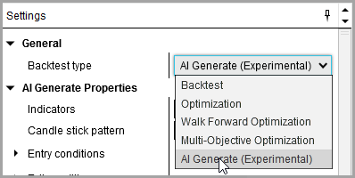
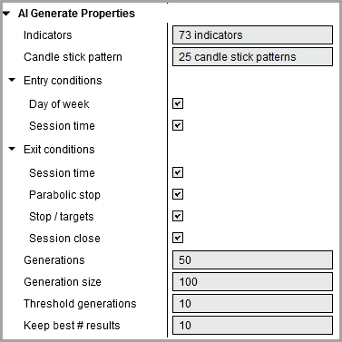
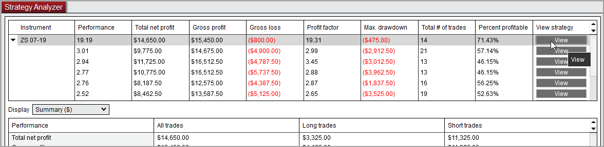

The AI Generate optimizer is an experimental tool designed to help traders find new strategy approaches. It can combine up to 73 NinjaTrader default indicators, 25 Candlestick patterns, and single series custom indicators.
Internally a Genetic Algorithm is used to search through the potential entry and exit combinations possible to find the best performing ones according to the Max Strength optimization criterion.
To prevent against potentially over-fitting against historical data, the AI Generate will check its own results after each generation using a Monte Carlo Simulation, it finds the 95% confidence interval.
We are excited to bring you this new tool to enhance your NinjaTrader strategy trading and are looking for feedback to further enhance it.
To run an AI Generate optimization you will need:
•Access to historical data
•A thorough understanding of the Strategy Analyzer's backtesting and optimization capabilities
 How to run an AI Generate Optimization
How to run an AI Generate Optimization
Start a AI Generate Optimization
To run a AI Generate Optimization select the Backtest type of "AI Generate (Experimental)" in the settings panel of the Strategy Analyzer.
i
Note: When making the selection additional parameters to configure your AI Generate optimization will be made visible.
|
Setting the AI Generate Properties
You can set the various AI Generate strategy parameters by left clicking on the triangles to expand the sub parameters (Entry conditions and Exit conditions)

Indicators
|
Select up to 73 NinjaTrader default indicators which to include in your AI Generation optimization and/or custom indicator that are single series
|
Candle stick pattern
|
Select up to 25 NinjaTrader default Candle stick patterns which to include in your AI Generation optimization
|
Day of week
|
If checked, the AI Generate optimization will include or exclude certain days of the week as part of the generated entry conditions for the strategies
|
Session time
|
If checked, the AI Generate optimization will include or exclude certain parts of the trading session via time filters as part of the generated entry conditions for the strategies or would include them in its exit conditions to allow for time exits
•for entries between 0 and 60 minutes after session opening, for a duration of max. 120 minutes in 15 minutes steps •for exits between 0 and 60 minutes before session close, going back max. 120 minutes in 15 minutes steps |
Parabolic stop
|
If checked, the SetParablicStop from NinjaScript could be used as an exit for the strategies
|
Stops / Targets
|
If checked, would allow for SetStopLoss, SetTrailStop, SetProfitTarget from NinjaScript could be used as exit for the strategies
|
Session close
|
If checked, would allow the scripts to exit any open positions by the session end time
|
Generations
|
Sets the number of generations to test. Each generation will hold the number of children set in "Generation Size". The number of total parameter combinations tested is equal to the Generation Size * Generations.
|
Generation size
|
Sets the number of combinations to test in each generation (children). The higher the size, the more variety of combinations that will be tested in each generation. You want to make sure to set this high enough to test enough parameter combinations to get good coverage of the problem domain but not so high that each possible parameter combination is being tested in a single generation.
|
Threshold of generations
|
Determines if the optimization process can be aborted if for the property number of consecutive generations the average of the performance values of the 'stable individuals' (the best 1/5 of the population is not touched on next generation = 'stable individuals') results did not improve. This allows for 'infinite' runs which would be terminated if no improvement is found. This logic is disabled if this property is set to 0.
|
Keep best # results
|
Sets the number of best results to display
|
Notes:
1. You can press 'Abort' to abort the AI Generate optimization, however you would have to wait until the 'generation size' iterations have passed to see the best found solutions so far.
2. In its current experimental state, the AI Generate sits on top the existing optimization framework inside NinjaTrader, as part of that you could see Strategy added indicators as well as the name from the last selected strategy (prior to switching over to the AI Generate optimization) still to appear on the Strategy Analyzer charts.
|
Viewing and saving results of the AI Generate optimization
Pressing the 'View' button in the optimization results section would let you open the individual generated strategy code in the NinjaScript editor. From there you could then review and also save and further customize.

|